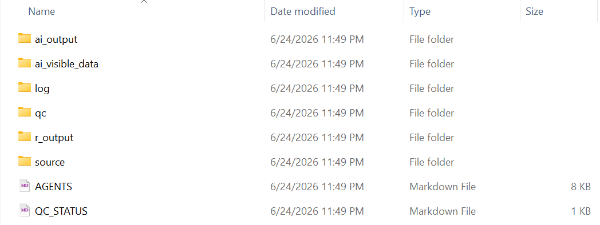
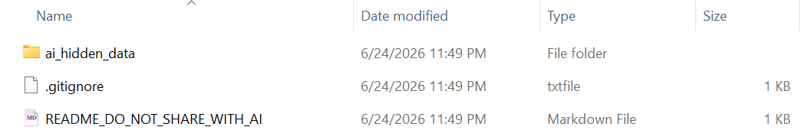
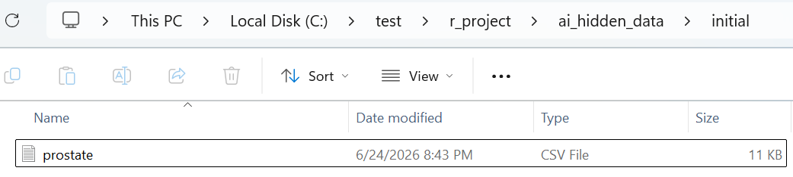

Clear boundaries, flexible QC, and traceable structure for AI-assisted R analysis.
airsetup creates a small, opinionated folder structure for R analysis projects where AI agents help write scripts, inspect visible dummy data, and review outputs, while hidden analysis data stays outside the AI-visible workspace.
It does not provide statistical analysis functions. Instead, it prepares separated folders, a minimal AGENTS.md, a QC_STATUS.md tracker, optional lightweight QC skill templates for context review, plan review, result review, and M11-informed semantic review, and optional independent QC agent scaffolding.
Installation
You can install the development version of airsetup from GitHub with:
# install.packages("pak")
pak::pak("gestimation/airsetup")Basic use
library(airsetup)
project_dir <- file.path(tempdir(), "my_analysis")
airsetup(
path = project_dir,
qc_agent = TRUE,
japanese = TRUE
)
aircheck(project_dir, qc_agent = TRUE)
airsetup("project")
airsetup("project", qc_agent = TRUE)
airsetup("project", split = FALSE)
airsetup("project", skills = FALSE)By default, airsetup() uses split = TRUE, skills = TRUE, and qc_agent = FALSE. With split = TRUE, it creates two sibling folders:
my_analysis/
+-- ai_project/
+-- r_project/
What airsetup creates
ai_project/ is the workspace AI agents may inspect and edit according to the project rules.

It contains folders for source materials, AI-visible data, AI-generated files, R outputs, QC evidence, logs, and AI/agent control files:
-
source/: source specifications, reference documents, and analysis instructions, such as protocols, SAPs, and database definitions. -
ai_visible_data/: dummy or visible data that AI agents may inspect. -
ai_output/: scripts and supporting files generated by AI agents. -
r_output/: outputs produced when R scripts are run by the user. -
qc/: QC evidence, review materials, comparison files, and discrepancy notes. -
log/: notes, decision records, and investigation logs. -
agent_control/: agent role definitions, agent control index, and generated QC skill templates. -
AGENTS.md: working rules for AI agents. -
QC_STATUS.md: the current QC status and open review items.
With split = TRUE, r_project/ is also created next to ai_project/.

It contains a hidden-data area and local reminders:
-
ai_hidden_data/: analysis data that AI agents must not inspect directly. -
.gitignore: defaults that avoid committing hidden analysis data. -
README_DO_NOT_SHARE_WITH_AI.md: a local reminder that this folder is for human/R execution, not AI inspection.
Generated folders and files
airsetup separates files created by package functions from files that AI agents may create later during planning, QC, and coding.
| Created by | Path | Role |
|---|---|---|
airsetup() |
ai_project/source/ and ai_project/source/initial_YYYYMMDD/
|
Source and reference materials visible to AI. |
airsetup() |
ai_project/ai_visible_data/ and ai_project/ai_visible_data/initial_YYYYMMDD/
|
Dummy or visible data that AI may inspect. |
airsetup() |
ai_project/ai_output/ |
AI-generated scripts, plans, notes, and working outputs. |
airsetup() |
ai_project/r_output/ |
Outputs from R scripts that the user runs. |
airsetup() |
ai_project/qc/ |
QC reports, review evidence, discrepancy notes, and QC summaries. |
airsetup() |
ai_project/log/ |
Work logs and decision records. |
airsetup() |
ai_project/agent_control/ |
AI/agent control files, agent role definitions, and QC skill templates. |
airsetup() |
ai_project/agent_control/AGENT_CONTROL_INDEX.md |
Index and selection guide for agent control files. |
airsetup() |
ai_project/AGENTS.md |
Working rules for AI agents. |
airsetup() |
ai_project/QC_STATUS.md |
Current QC status, open questions, and links to detailed QC materials. |
airsetup(split = TRUE) |
r_project/ai_hidden_data/ and r_project/ai_hidden_data/initial_YYYYMMDD/
|
Analysis data area that AI must not inspect. |
airsetup(split = TRUE) |
r_project/.gitignore |
Defaults that avoid committing hidden analysis data. |
airsetup(split = TRUE) |
r_project/README_DO_NOT_SHARE_WITH_AI.md |
Local reminder that the folder is for human/R execution. |
airskill() |
ai_project/agent_control/QC_SKILL_CONTEXT.md |
Lightweight context QC skill. |
airskill() |
ai_project/agent_control/QC_SKILL_PLAN.md |
Plan and SAP implementability QC skill. |
airskill() |
ai_project/agent_control/QC_SKILL_RESULT.md |
Result consistency and interpretation QC skill. |
airskill() |
ai_project/agent_control/QC_SKILL_M11SEMANTIC.md |
M11-informed semantic context QC skill for complex clinical-trial materials. |
airsetup(qc_agent = TRUE) |
ai_project/agent_control/WORKFLOW_AGENT.md |
Workflow agent role and Plan gate constraints. |
airsetup(qc_agent = TRUE) |
ai_project/agent_control/QC_AGENT.md |
Independent QC agent role and decision rules. |
airsetup(qc_agent = TRUE) |
ai_project/qc/review/ |
Independent QC review and decision areas. |
airsetup(qc_agent = TRUE) |
ai_project/log/QC_REVIEW_LOG.md and ai_project/log/DECISION_LOG.md
|
QC review and decision logs. |
airsetup_demo() |
ai_project/source/initial_YYYYMMDD/definition_demodata.txt |
Demo data definition. |
airsetup_demo() |
ai_project/ai_visible_data/initial_YYYYMMDD/demodata.rds |
AI-visible demo data. |
airsetup_demo() |
r_project/ai_hidden_data/initial_YYYYMMDD/demodata.rds |
Demo R-execution data. |
Some files are not created automatically. They are recommended output locations for AI agents when the relevant workflow step is actually performed.
| Workflow step | Recommended path | Role |
|---|---|---|
| Context QC | ai_project/qc/context-qc-001.md |
Lightweight context QC report. |
| Plan QC | ai_project/qc/plan-qc-001.md |
Coding plan or SAP QC report. |
| Result QC | ai_project/qc/result-qc-001.md |
Analysis result QC report. |
| SAP drafting, when useful | ai_project/ai_output/SAP.md |
Draft project-specific SAP or analysis specification. |
| SAP decisions, when useful | ai_project/ai_output/SAP_DECISIONS.md |
Source-specified, user-approved, proposed, and unresolved analysis decisions. |
| M11 semantic mapping | ai_project/ai_output/m11semantic/M11SEMANTIC_MAP.md |
M11-informed semantic map for R planning and coding. |
| M11 semantic QC | ai_project/qc/m11semantic/M11SEMANTIC_QC_SUMMARY.md |
QC-oriented readiness summary for the M11 semantic map. |
Clear boundaries with separated folders
The package separates what AI can inspect from what R can use for real analysis. The visible and hidden data areas would share the same internal structure:
ai_project/ai_visible_data/initial_YYYYMMDD/
r_project/ai_hidden_data/initial_YYYYMMDD/For example, a small AI-visible data set demodata.rds may be placed in ai_project/ai_visible_data/initial_YYYYMMDD/, while a full analysis data set with the same file name and the same data structure may be placed in r_project/ai_hidden_data/initial_YYYYMMDD/.


This lets AI agents design scripts against visible data while R scripts can be run against hidden data by changing the input root, without asking AI to inspect the hidden files.
What AGENTS.md tells AI agents
The generated AGENTS.md is intentionally practical. It tells AI agents:
- which folders they may inspect;
- that
../r_project/ai_hidden_data/must not be listed, opened, copied, summarized, or otherwise inspected; - where to place generated scripts and supporting files;
- where R outputs and QC evidence should live;
- to check
QC_STATUS.mdbefore substantive work; - to distinguish AI risk assessment from user-approved QC decisions;
- to separate document facts, candidate inferences, unresolved issues, and implementation assumptions;
- not to silently assume treatment-group coding, endpoint-variable mapping, analysis-set flags, visit coding, or missing-value coding;
- that Workflow agent outputs belong under
ai_output/, QC agent outputs belong underqc/, and QC agents must not directly overwrite Workflow outputs; - that detailed agent role definitions and QC skill instructions are stored under
agent_control/; - to ask for human approval when a decision requires domain judgment.
The generated file is not an access-control mechanism. It is a project-level working rule that makes the boundary explicit and repeatable.
When qc_agent = TRUE, AGENTS.md, agent_control/WORKFLOW_AGENT.md, and agent_control/QC_AGENT.md all state the Plan gate rule: the Workflow agent must not proceed to final R code generation until the QC agent records APPROVE_NEXT_STEP. Before that approval, context confirmation, M11SEMANTIC extraction, SAP or analysis-plan drafting, data requirements tables, endpoint map drafts, metadata inspection plans, and pseudocode are allowed. Final R analysis scripts, final endpoint or analysis-set derivation code, final table/figure scripts, and final statistical model implementations are not.
Flexible QC and traceability
airsetup does not prescribe one QC method. A project might use double programming, output review, row-count checks, discrepancy tables, or another context-specific workflow.
The package simply gives QC a stable place:
-
qc/for evidence and review materials; -
QC_STATUS.mdfor current status, open questions, and human review items; -
log/for decisions and investigation notes that matter later.
As data batches, scripts, outputs, and QC evidence evolve, the structure keeps those materials separated instead of mixing them into one working directory.
What the QC skills are for
The generated skill files are intended to support self-checking steps in an AI-assisted R workflow.
QC_SKILL_CONTEXT.md: checks whether the supplied analysis context is clear enough before drafting a plan or generating R code.QC_SKILL_PLAN.md: checks whether an coding plan or SAP is clear enough for R implementation.QC_SKILL_RESULT.md: checks whether analysis results are internally consistent, traceable, aligned with the plan, and safe to interpret.QC_SKILL_M11SEMANTIC.md: supports M11-informed semantic organization across multiple clinical-trial materials before R planning or R coding. It is generated by default but should be used only for M11/electronic-protocol tasks or complex clinical-trial semantic review, not ordinary context QC.AGENT_CONTROL_INDEX.md: explains the agent control files and available QC skills.
The skills use a compact QC report format with domain-level status, issue severity, readiness for next steps, cannot-assess items, AI assumption risks, and recommended handoff actions.
They are intentionally lightweight. A Pass from these skills does not mean formal statistical approval, independent validation, regulatory approval, or final scientific acceptance.
Check the required structure
Use aircheck() to verify that the required folders and files exist.
aircheck() returns a data frame with one row per required item. It reports whether each folder or file was found.
This makes it easy to confirm that the workspace still has the structure that AI-assisted analysis depends on.